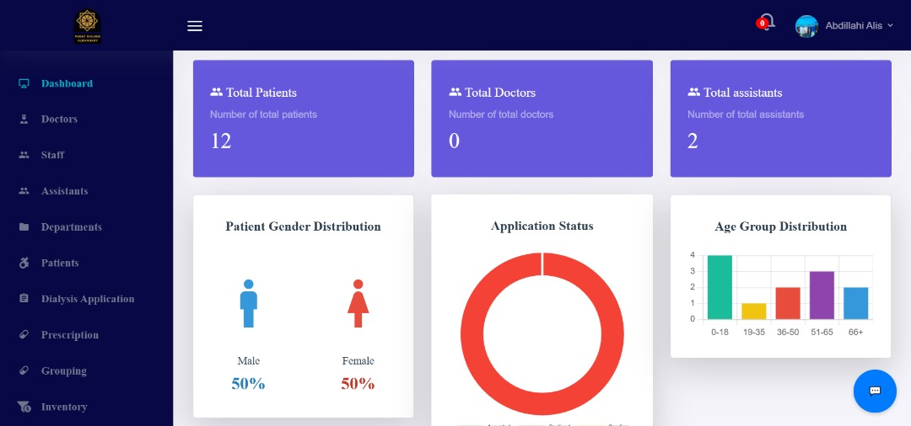
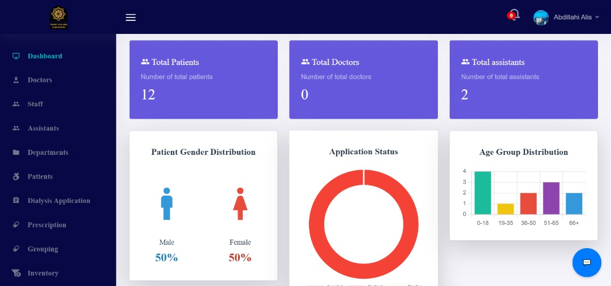
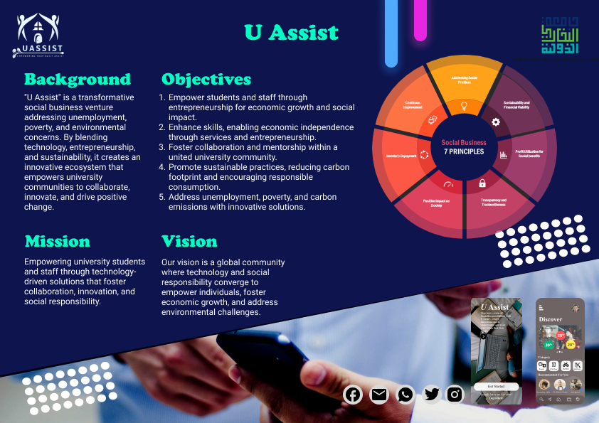

January 15, 2025
Pusat Dialysis Albukhary
System is an innovative web application developed for Albukhary Dialysis Centre.
It simplifies patient management,
optimizes workflows, and integrates role-based functionalities for admins, assistants, and doctors.
Designed with user experience and scalability in mind, the system includes features such as AI-powered chatbot support,
application handling for free dialysis treatments, and comprehensive record management.
 

Hospital management system designed for Albukhary Dialysis Centre to streamline patient applications, lab records, and prescriptions. Features role-based access for doctors, assistants, and admins, along with an AI-powered chatbot for patient inquiries.

Analyzed customer reviews to predict airline recommendations using NLP and machine learning. Achieved 90% accuracy with Logistic Regression and deployed a real-time sentiment analysis tool via Streamlit.

Developed a machine learning model to predict heart attack risk using clinical data. Applied supervised learning techniques, achieving high accuracy in identifying high-risk patients.

Built a machine learning model to predict house prices based on key factors and applied clustering techniques to segment customers. Provided data-driven insights for real estate pricing and targeted marketing.

A mobile app prototype designed for university students, providing on-campus shopping notifications, updates on university rules, events, and more. Aimed at enhancing student life with convenient access to campus resources and information.

Used data analytics to analyze clinical records and predict heart failure risk. Employed techniques like data cleaning, exploratory data analysis, and feature engineering to derive actionable insights for healthcare risk assessment.